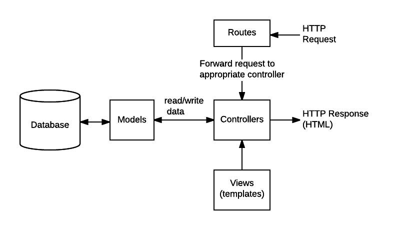

In this tutorial we'll set up routes (URL handling code) with "dummy" handler functions for all the resource endpoints that we'll eventually need in the LocalLibrary website. On completion we'll have a modular structure for our route handling code, which we can extend with real handler functions in the following articles. We'll also have a really good understanding of how to create modular routes using Express!
| Prerequisites: | Read the Express/Node introduction. Complete previous tutorial topics (including Express Tutorial Part 3: Using a Database (with Mongoose)). |
|---|---|
| Objective: | To understand how to create simple routes. To set up all our URL endpoints. |
In the last tutorial article we defined Mongoose models to interact with the database, and used a (standalone) script to create some initial library records. We can now write the code to present that information to users. The first thing we need to do is determine what information we want to be able to display in our pages, and then define appropriate URLs for returning those resources. Then we're going to need to create the routes (URL handlers) and views (templates) to display those pages.
The diagram below is provided as a reminder of the main flow of data and things that need to be implemented when handling an HTTP request/response. In addition to the views and routes the diagram shows "controllers" — functions that separate out the code to route requests from the code that actually processes requests.
As we've already created the models, the main things we'll need to create are:

Ultimately we might have pages to show lists and detail information for books, genres, authors and bookinstances, along with pages to create, update, and delete records. That's a lot to document in one article. Therefore most of this article will concentrate on setting up our routes and controllers to return "dummy" content. We'll extend the controller methods in our subsequent articles to work with model data.
The first section below provides a brief "primer" on how to use the Express Router middleware. We'll then use that knowledge in the following sections when we set up the LocalLibrary routes.
A route is a section of Express code that associates an HTTP verb (GET, POST, PUT, DELETE, etc.), a URL path/pattern, and a function that is called to handle that pattern.
There are several ways to create routes. For this tutorial we're going to use the express.Router middleware as it allows us to group the route handlers for a particular part of a site together and access them using a common route-prefix. We'll keep all our library-related routes in a "catalog" module, and, if we add routes for handling user accounts or other functions, we can keep them grouped separately.
Note: We discussed Express application routes briefly in our Express Introduction > Creating route handlers. Other than providing better support for modularization (as discussed in the first subsection below), using Router is very similar to defining routes directly on the Express application object.
The rest of this section provides an overview of how the Router can be used to define the routes.
The code below provides a concrete example of how we can create a route module and then use it in an Express application.
First we create routes for a wiki in a module named wiki.js. The code first imports the Express application object, uses it to get a Router object and then adds a couple of routes to it using the get() method. Last of all the module exports the Router object.
// wiki.js - Wiki route module.
var express = require('express');
var router = express.Router();
// Home page route.
router.get('/', function (req, res) {
res.send('Wiki home page');
})
// About page route.
router.get('/about', function (req, res) {
res.send('About this wiki');
})
module.exports = router;
Note: Above we are defining our route handler callbacks directly in the router functions. In the LocalLibrary we'll define these callbacks in a separate controller module.
To use the router module in our main app file we first require() the route module (wiki.js). We then call use() on the Express application to add the Router to the middleware handling path, specifying a URL path of 'wiki'.
var wiki = require('./wiki.js');
// ...
app.use('/wiki', wiki);
The two routes defined in our wiki route module are then accessible from /wiki/ and /wiki/about/.
Our module above defines a couple of typical route functions. The "about" route (reproduced below) is defined using the Router.get() method, which responds only to HTTP GET requests. The first argument to this method is the URL path while the second is a callback function that will be invoked if an HTTP GET request with the path is received.
router.get('/about', function (req, res) {
res.send('About this wiki');
})
The callback takes three arguments (usually named as shown: req, res, next), that will contain the HTTP Request object, HTTP response, and the next function in the middleware chain.
Note: Router functions are Express middleware, which means that they must either complete (respond to) the request or call the next function in the chain. In the case above we complete the request using send(), so the next argument is not used (and we choose not to specify it).
The router function above takes a single callback, but you can specify as many callback arguments as you want, or an array of callback functions. Each function is part of the middleware chain, and will be called in the order it is added to the chain (unless a preceding function completes the request).
The callback function here calls send() on the response to return the string "About this wiki" when we receive a GET request with the path ('/about'). There are a number of other response methods for ending the request/response cycle. For example, you could call res.json() to send a JSON response or res.sendFile() to send a file. The response method that we'll be using most often as we build up the library is render(), which creates and returns HTML files using templates and data—we'll talk a lot more about that in a later article!
The example routes above use the Router.get() method to respond to HTTP GET requests with a certain path.
The Router also provides route methods for all the other HTTP verbs, that are mostly used in exactly the same way: post(), put(), delete(), options(), trace(), copy(), lock(), mkcol(), move(), purge(), propfind(), proppatch(), unlock(), report(), mkactivity(), checkout(), merge(), m-search(), notify(), subscribe(), unsubscribe(), patch(), search(), and connect().
For example, the code below behaves just like the previous /about route, but only responds to HTTP POST requests.
router.post('/about', function (req, res) {
res.send('About this wiki');
})
The route paths define the endpoints at which requests can be made. The examples we've seen so far have just been strings, and are used exactly as written: '/', '/about', '/book', '/any-random.path'.
Route paths can also be string patterns. String patterns use a form of regular expression syntax to define patterns of endpoints that will be matched. The syntax is listed below (note that the hyphen (-) and the dot (.) are interpreted literally by string-based paths):
? : The endpoint must have 0 or 1 of the preceding character (or group), e.g. a route path of '/ab?cd' will match endpoints acd or abcd.+ : The endpoint must have 1 or more of the preceding character (or group), e.g. a route path of '/ab+cd' will match endpoints abcd, abbcd, abbbcd, and so on.* : The endpoint may have an arbitrary string where the * character is placed. E.g. a route path of '/ab*cd' will match endpoints abcd, abXcd, abSOMErandomTEXTcd, and so on.() : Grouping match on a set of characters to perform another operation on, e.g. '/ab(cd)?e' will perform a ?-match on the group (cd)—it will match abe and abcde.The route paths can also be JavaScript regular expressions. For example, the route path below will match catfish and dogfish, but not catflap, catfishhead, and so on. Note that the path for a regular expression uses regular expression syntax (it is not a quoted string as in the previous cases).
app.get(/.*fish$/, function (req, res) {
...
})
Note: Most of our routes for the LocalLibrary will use strings and not regular expressions. We'll also use route parameters as discussed in the next section.
Route parameters are named URL segments used to capture values at specific positions in the URL. The named segments are prefixed with a colon and then the name (e.g. /:your_parameter_name/. The captured values are stored in the req.params object using the parameter names as keys (e.g. req.params.your_parameter_name).
So for example, consider a URL encoded to contain information about users and books: http://localhost:3000/users/34/books/8989. We can extract this information as shown below, with the userId and bookId path parameters:
app.get('/users/:userId/books/:bookId', function (req, res) {
// Access userId via: req.params.userId
// Access bookId via: req.params.bookId
res.send(req.params);
})
The names of route parameters must be made up of “word characters” (A-Z, a-z, 0-9, and _).
Note: The URL /book/create will be matched by a route like /book/:bookId (which will extract a "bookId" value of 'create'). The first route that matches an incoming URL will be used, so if you want to process /book/create URLs separately, their route handler must be defined before your /book/:bookId route.
That's all you need to get started with routes - if needed you can find more information in the Express docs: Basic routing and Routing guide. The following sections show how we'll set up our routes and controllers for the LocalLibrary.
The URLs that we're ultimately going to need for our pages are listed below, where object is replaced by the name of each of our models (book, bookinstance, genre, author), objects is the plural of object, and id is the unique instance field (_id) that is given to each Mongoose model instance by default.
catalog/ — The home/index page.catalog/<objects>/ — The list of all books, bookinstances, genres, or authors (e.g. /catalog/books/, /catalog/genres/, etc.)catalog/<object>/<id> — The detail page for a specific book, bookinstance, genre, or author with the given _id field value (e.g. /catalog/book/584493c1f4887f06c0e67d37).catalog/<object>/create — The form to create a new book, bookinstance, genre, or author (e.g. /catalog/book/create).catalog/<object>/<id>/update — The form to update a specific book, bookinstance, genre, or author with the given _id field value (e.g. /catalog/book/584493c1f4887f06c0e67d37/update).catalog/<object>/<id>/delete — The form to delete a specific book, bookinstance, genre, author with the given _id field value (e.g. /catalog/book/584493c1f4887f06c0e67d37/delete).The first home page and list pages don't encode any additional information. While the results returned will depend on the model type and the content in the database, the queries run to get the information will always be the same (similarly the code run for object creation will always be similar).
By contrast the other URLs are used to act on a specific document/model instance—these encode the identity of the item in the URL (shown as <id> above). We'll use path parameters to extract the encoded information and pass it to the route handler (and in a later article we'll use this to dynamically determine what information to get from the database). By encoding the information in our URL we only need one route for every resource of a particular type (e.g. one route to handle the display of every single book item).
Note: Express allows you to construct your URLs any way you like — you can encode information in the body of the URL as shown above or use URL GET parameters (e.g. /book/?id=6). Whichever approach you use, the URLs should be kept clean, logical and readable (check out the W3C advice here).
Next we create our route handler callback functions and route code for all the above URLs.
Before we define our routes, we'll first create all the dummy/skeleton callback functions that they will invoke. The callbacks will be stored in separate "controller" modules for Books, BookInstances, Genres, and Authors (you can use any file/module structure, but this seems an appropriate granularity for this project).
Start by creating a folder for our controllers in the project root (/controllers) and then create separate controller files/modules for handling each of the models:
/express-locallibrary-tutorial //the project root
/controllers
authorController.js
bookController.js
bookinstanceController.js
genreController.js
Open the /controllers/authorController.js file and type in the following code:
var Author = require('../models/author');
// Display list of all Authors.
exports.author_list = function(req, res) {
res.send('NOT IMPLEMENTED: Author list');
};
// Display detail page for a specific Author.
exports.author_detail = function(req, res) {
res.send('NOT IMPLEMENTED: Author detail: ' + req.params.id);
};
// Display Author create form on GET.
exports.author_create_get = function(req, res) {
res.send('NOT IMPLEMENTED: Author create GET');
};
// Handle Author create on POST.
exports.author_create_post = function(req, res) {
res.send('NOT IMPLEMENTED: Author create POST');
};
// Display Author delete form on GET.
exports.author_delete_get = function(req, res) {
res.send('NOT IMPLEMENTED: Author delete GET');
};
// Handle Author delete on POST.
exports.author_delete_post = function(req, res) {
res.send('NOT IMPLEMENTED: Author delete POST');
};
// Display Author update form on GET.
exports.author_update_get = function(req, res) {
res.send('NOT IMPLEMENTED: Author update GET');
};
// Handle Author update on POST.
exports.author_update_post = function(req, res) {
res.send('NOT IMPLEMENTED: Author update POST');
};
The module first requires the model that we'll later be using to access and update our data. It then exports functions for each of the URLs we wish to handle (the create, update and delete operations use forms, and hence also have additional methods for handling form post requests — we'll discuss those methods in the "forms article" later on).
All the functions have the standard form of an Express middleware function, with arguments for the request and response. We could also include the next function to be called if the method does not complete the request cycle, but in all these cases it does, so we've omitted it. The methods return a string indicating that the associated page has not yet been created. If a controller function is expected to receive path parameters, these are output in the message string (see req.params.id above).
Open the /controllers/bookinstanceController.js file and copy in the following code (this follows an identical pattern to the Author controller module):
var BookInstance = require('../models/bookinstance');
// Display list of all BookInstances.
exports.bookinstance_list = function(req, res) {
res.send('NOT IMPLEMENTED: BookInstance list');
};
// Display detail page for a specific BookInstance.
exports.bookinstance_detail = function(req, res) {
res.send('NOT IMPLEMENTED: BookInstance detail: ' + req.params.id);
};
// Display BookInstance create form on GET.
exports.bookinstance_create_get = function(req, res) {
res.send('NOT IMPLEMENTED: BookInstance create GET');
};
// Handle BookInstance create on POST.
exports.bookinstance_create_post = function(req, res) {
res.send('NOT IMPLEMENTED: BookInstance create POST');
};
// Display BookInstance delete form on GET.
exports.bookinstance_delete_get = function(req, res) {
res.send('NOT IMPLEMENTED: BookInstance delete GET');
};
// Handle BookInstance delete on POST.
exports.bookinstance_delete_post = function(req, res) {
res.send('NOT IMPLEMENTED: BookInstance delete POST');
};
// Display BookInstance update form on GET.
exports.bookinstance_update_get = function(req, res) {
res.send('NOT IMPLEMENTED: BookInstance update GET');
};
// Handle bookinstance update on POST.
exports.bookinstance_update_post = function(req, res) {
res.send('NOT IMPLEMENTED: BookInstance update POST');
};
Open the /controllers/genreController.js file and copy in the following text (this follows an identical pattern to the Author and BookInstance files):
var Genre = require('../models/genre');
// Display list of all Genre.
exports.genre_list = function(req, res) {
res.send('NOT IMPLEMENTED: Genre list');
};
// Display detail page for a specific Genre.
exports.genre_detail = function(req, res) {
res.send('NOT IMPLEMENTED: Genre detail: ' + req.params.id);
};
// Display Genre create form on GET.
exports.genre_create_get = function(req, res) {
res.send('NOT IMPLEMENTED: Genre create GET');
};
// Handle Genre create on POST.
exports.genre_create_post = function(req, res) {
res.send('NOT IMPLEMENTED: Genre create POST');
};
// Display Genre delete form on GET.
exports.genre_delete_get = function(req, res) {
res.send('NOT IMPLEMENTED: Genre delete GET');
};
// Handle Genre delete on POST.
exports.genre_delete_post = function(req, res) {
res.send('NOT IMPLEMENTED: Genre delete POST');
};
// Display Genre update form on GET.
exports.genre_update_get = function(req, res) {
res.send('NOT IMPLEMENTED: Genre update GET');
};
// Handle Genre update on POST.
exports.genre_update_post = function(req, res) {
res.send('NOT IMPLEMENTED: Genre update POST');
};
Open the /controllers/bookController.js file and copy in the following code. This follows the same pattern as the other controller modules, but additionally has an index() function for displaying the site welcome page:
var Book = require('../models/book');
exports.index = function(req, res) {
res.send('NOT IMPLEMENTED: Site Home Page');
};
// Display list of all books.
exports.book_list = function(req, res) {
res.send('NOT IMPLEMENTED: Book list');
};
// Display detail page for a specific book.
exports.book_detail = function(req, res) {
res.send('NOT IMPLEMENTED: Book detail: ' + req.params.id);
};
// Display book create form on GET.
exports.book_create_get = function(req, res) {
res.send('NOT IMPLEMENTED: Book create GET');
};
// Handle book create on POST.
exports.book_create_post = function(req, res) {
res.send('NOT IMPLEMENTED: Book create POST');
};
// Display book delete form on GET.
exports.book_delete_get = function(req, res) {
res.send('NOT IMPLEMENTED: Book delete GET');
};
// Handle book delete on POST.
exports.book_delete_post = function(req, res) {
res.send('NOT IMPLEMENTED: Book delete POST');
};
// Display book update form on GET.
exports.book_update_get = function(req, res) {
res.send('NOT IMPLEMENTED: Book update GET');
};
// Handle book update on POST.
exports.book_update_post = function(req, res) {
res.send('NOT IMPLEMENTED: Book update POST');
};
Next we create routes for all the URLs needed by the LocalLibrary website, which will call the controller functions we defined in the previous section.
The skeleton already has a ./routes folder containing routes for the index and users. Create another route file — catalog.js — inside this folder, as shown.
/express-locallibrary-tutorial //the project root /routes index.js users.js catalog.js
Open /routes/catalog.js and copy in the code below:
var express = require('express');
var router = express.Router();
// Require controller modules.
var book_controller = require('../controllers/bookController');
var author_controller = require('../controllers/authorController');
var genre_controller = require('../controllers/genreController');
var book_instance_controller = require('../controllers/bookinstanceController');
/// BOOK ROUTES ///
// GET catalog home page.
router.get('/', book_controller.index);
// GET request for creating a Book. NOTE This must come before routes that display Book (uses id).
router.get('/book/create', book_controller.book_create_get);
// POST request for creating Book.
router.post('/book/create', book_controller.book_create_post);
// GET request to delete Book.
router.get('/book/:id/delete', book_controller.book_delete_get);
// POST request to delete Book.
router.post('/book/:id/delete', book_controller.book_delete_post);
// GET request to update Book.
router.get('/book/:id/update', book_controller.book_update_get);
// POST request to update Book.
router.post('/book/:id/update', book_controller.book_update_post);
// GET request for one Book.
router.get('/book/:id', book_controller.book_detail);
// GET request for list of all Book items.
router.get('/books', book_controller.book_list);
/// AUTHOR ROUTES ///
// GET request for creating Author. NOTE This must come before route for id (i.e. display author).
router.get('/author/create', author_controller.author_create_get);
// POST request for creating Author.
router.post('/author/create', author_controller.author_create_post);
// GET request to delete Author.
router.get('/author/:id/delete', author_controller.author_delete_get);
// POST request to delete Author.
router.post('/author/:id/delete', author_controller.author_delete_post);
// GET request to update Author.
router.get('/author/:id/update', author_controller.author_update_get);
// POST request to update Author.
router.post('/author/:id/update', author_controller.author_update_post);
// GET request for one Author.
router.get('/author/:id', author_controller.author_detail);
// GET request for list of all Authors.
router.get('/authors', author_controller.author_list);
/// GENRE ROUTES ///
// GET request for creating a Genre. NOTE This must come before route that displays Genre (uses id).
router.get('/genre/create', genre_controller.genre_create_get);
//POST request for creating Genre.
router.post('/genre/create', genre_controller.genre_create_post);
// GET request to delete Genre.
router.get('/genre/:id/delete', genre_controller.genre_delete_get);
// POST request to delete Genre.
router.post('/genre/:id/delete', genre_controller.genre_delete_post);
// GET request to update Genre.
router.get('/genre/:id/update', genre_controller.genre_update_get);
// POST request to update Genre.
router.post('/genre/:id/update', genre_controller.genre_update_post);
// GET request for one Genre.
router.get('/genre/:id', genre_controller.genre_detail);
// GET request for list of all Genre.
router.get('/genres', genre_controller.genre_list);
/// BOOKINSTANCE ROUTES ///
// GET request for creating a BookInstance. NOTE This must come before route that displays BookInstance (uses id).
router.get('/bookinstance/create', book_instance_controller.bookinstance_create_get);
// POST request for creating BookInstance.
router.post('/bookinstance/create', book_instance_controller.bookinstance_create_post);
// GET request to delete BookInstance.
router.get('/bookinstance/:id/delete', book_instance_controller.bookinstance_delete_get);
// POST request to delete BookInstance.
router.post('/bookinstance/:id/delete', book_instance_controller.bookinstance_delete_post);
// GET request to update BookInstance.
router.get('/bookinstance/:id/update', book_instance_controller.bookinstance_update_get);
// POST request to update BookInstance.
router.post('/bookinstance/:id/update', book_instance_controller.bookinstance_update_post);
// GET request for one BookInstance.
router.get('/bookinstance/:id', book_instance_controller.bookinstance_detail);
// GET request for list of all BookInstance.
router.get('/bookinstances', book_instance_controller.bookinstance_list);
module.exports = router;
The module requires Express and then uses it to create a Router object. The routes are all set up on the router, which is then exported.
The routes are defined either using .get() or .post() methods on the router object. All the paths are defined using strings (we don't use string patterns or regular expressions). Routes that act on some specific resource (e.g. book) use path parameters to get the object id from the URL.
The handler functions are all imported from the controller modules we created in the previous section.
We've set up all our new routes, but we still have a route to the original page. Let's instead redirect this to the new index page that we've created at the path '/catalog'.
Open /routes/index.js and replace the existing route with the function below.
// GET home page.
router.get('/', function(req, res) {
res.redirect('/catalog');
});
Note: This is our first use of the redirect() response method. This redirects to the specified page, by default sending HTTP status code "302 Found". You can change the status code returned if needed, and supply either absolute or relative paths.
The last step is to add the routes to the middleware chain. We do this in app.js.
Open app.js and require the catalog route below the other routes (add the third line shown below, underneath the other two):
var indexRouter = require('./routes/index');
var usersRouter = require('./routes/users');
var catalogRouter = require('./routes/catalog'); //Import routes for "catalog" area of site
Next, add the catalog route to the middleware stack below the other routes (add the third line shown below, underneath the other two):
app.use('/', indexRouter);
app.use('/users', usersRouter);
app.use('/catalog', catalogRouter); // Add catalog routes to middleware chain.
Note: We have added our catalog module at a path '/catalog'. This is prepended to all of the paths defined in the catalog module. So for example, to access a list of books, the URL will be: /catalog/books/.
That's it. We should now have routes and skeleton functions enabled for all the URLs that we will eventually support on the LocalLibrary website.
To test the routes, first start the website using your usual approach
// Windows SET DEBUG=express-locallibrary-tutorial:* & npm start // macOS or Linux DEBUG=express-locallibrary-tutorial:* npm start
// Windows SET DEBUG=express-locallibrary-tutorial:* & npm run devstart // macOS or Linux DEBUG=express-locallibrary-tutorial:* npm run devstart
Then navigate to a number of LocalLibrary URLs, and verify that you don't get an error page (HTTP 404). A small set of URLs are listed below for your convenience:
We've now created all the routes for our site, along with dummy controller functions that we can populate with a full implementation in later articles. Along the way we've learned a lot of fundamental information about Express routes, and some approaches for structuring our routes and controllers.
In our next article we'll create a proper welcome page for the site, using views (templates) and information stored in our models.
{{PreviousMenuNext("Learn/Server-side/Express_Nodejs/mongoose", "Learn/Server-side/Express_Nodejs/Displaying_data", "Learn/Server-side/Express_Nodejs")}}